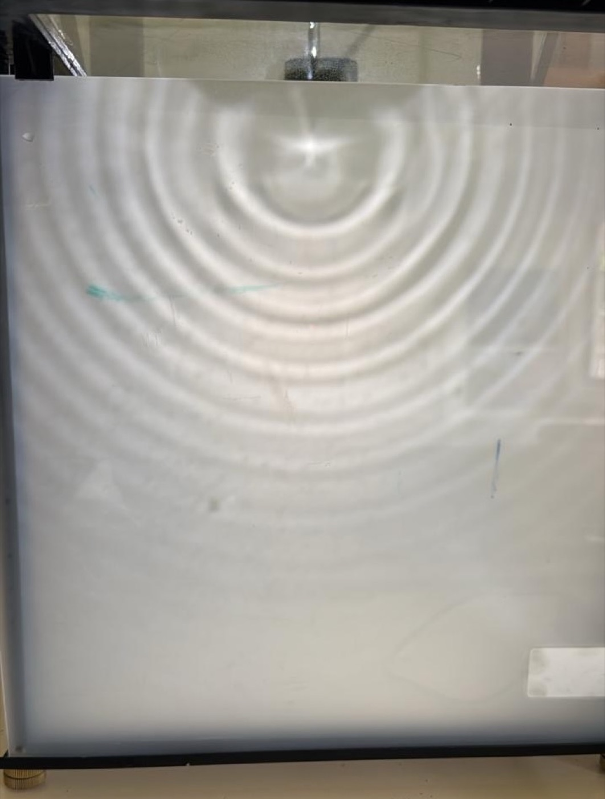

No wave-vocabulary warm-up. Just a shallow tray of water, a strobe, a motorised source, and the class learning to build an explanation from what they actually see.
This is Part I of a two-demonstration lesson taught on the same day. I set the ripple tank up at the front of the room, old school: a shallow tray of water, a strobe/lamp, and a motorised wave source. I do not begin with a wave-vocabulary warm-up. I turn it on and let them look.
I use the source as a quick SHM review: its oscillation generates each wavefront and establishes the frequency. We look at standing waves, measure wavelength from the spacing of the wavefronts, and combine it with the motor's frequency to find speed using \(v = f\lambda\). Then I add obstacles and ask what changes as their size changes relative to the wavelength. I also freeze a wavefront and use Huygens–Fresnel to treat each point as a source whose wavelets rebuild the next front. Throughout, students have to tell me what they actually observe and use the source, wavelength, and obstacle to justify it. That language carries directly into Part II and the later refraction lesson.
This is the first activity that sets up a little bit of everything that comes later in waves. Students tend to say that an obstacle simply blocks a wave. What they miss is that the result depends on the obstacle's size relative to the wavelength. The source fixing the frequency is another fact I need them to carry forward. More importantly, I want them to build an explanation from what is happening in front of them. Recognising a textbook diagram or repeating somebody else's explanation is not enough.
